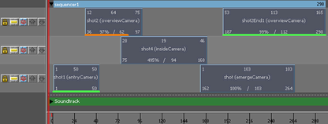

快照视图区域是操纵快照的位置。另请参见 操纵序列中的摄影机快照。

摄影机序列器轨迹控制
每个轨迹都具有以下各个控制。
-
锁定(Lock)

-
锁定轨迹上的所有快照的位置和持续时间。
- 单放(Solo)

-
禁用除该轨迹上的快照外的所有快照。
-
禁用(Mute)

-
禁用轨迹。
-
向上移动轨迹(Move Track Up)

-
单击以在视图区域向上移动选定轨迹。
-
向下移动轨迹(Move Track Down)

-
单击以在视图区域向下移动选定轨迹。
影片片段指示器
当快照将渲染为一个片段时，Maya 在快照下方绘制“影片片段指示器”线，以在快照状态上提供可视反馈。该指示器提供有关片段的范围及其状态的信息。
快照影片指示器显示与当前快照相关联的影片片段的范围（使用各种“摄影机序列器”(Camera Sequencer)“播放预览”(Playblast）菜单项，或直接通过“附加图像平面”(Attach Image Plane)）。
如果在播放预览之后修剪快照，影片片段指示器则延伸超过快照的末端，以指示在磁盘上还有其他影片帧。如果延伸快照源范围，影片片段指示器则显示短于快照。
影片片段指示器在快照视图区域中的快照下面加下划线。指示器的样式和颜色显示片段的同步状态。查找以下指示器以理解片段的状态：
- 绿：片段与场景视图同步，并且片段的帧与“摄影机序列器”(Camera Sequencer)以 1:1 匹配。
- 橙色：片段与场景视图同步，但是影片可能被缩放以匹配“摄影机序列器”(Camera Sequencer)。
- 红：片段不与场景视图同步。这可能是由片段未处理的比例/时间更改，或快照的摄影机中的更改导致的。
- 实线：影片片段与场景视图中的 3D 几何体同步。
- 虚线：指示 3D 几何体不与场景视图中的几何体同步。（这可能在操纵片段、更改其摄影机等等时发生。）可以选择“播放预览 > 重新播放预览选定镜头”(Playblast > Re-Playblast Selected Shot)以重新同步片段。